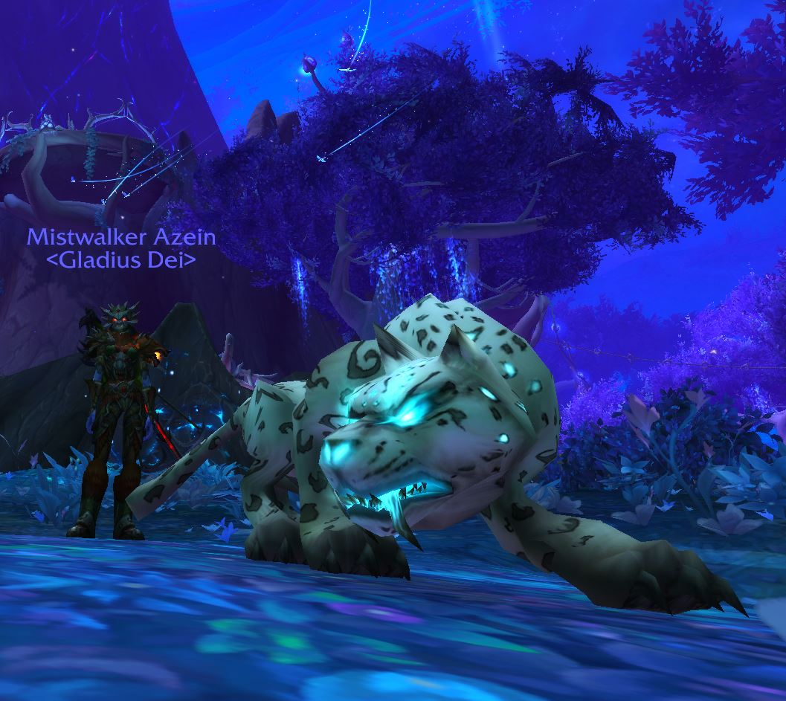

From an early age the call of the wild draws some adventurers from the comfort of their homes into the unforgiving primal world outside. Those who endure become hunters. Masters of their environment, they are able to slip like ghosts through the trees and lay traps in the paths of their enemies.
My name is Azein, I am a Master Marksman Hunter on Ravencrest. I like to raid and do dungeons and collect rare and exotic pets.This site will exhibit some of the many rare pets I have tamed from all around the world of Azeroth.
On this website I will introduce you to some of my loyal companions and will also show you a sneak peak into the habitats they can be found in and maybe you can even tame one of your own!
